How to Make Mechanisms of Control
Mechanisms of Motion
From Character to Kinetic Structure
Today we move from:
- motion vocabulary
- servo gestures
- simple angular control
toward:
- mechanical translation
- stepper-driven rhythm
- 3D-printed motion structures
- kinetic studies as design prototypes
How does an adjective become a mechanism?
How does a machine move when it is:
- hesitant?
- exhausted?
- alert?
- breathing?
- impatient?
- fragile?
- ritualistic?
Terms for motion Concepts
- rhythm
- acceleration
- pause
- reversal
- range
- repetition
- resistance
- weight
- friction
- material softness
By the end of the session, you should be able to move from:
“I want it to move in a hesitant way.”
“I need small advances, pauses, reversals, low acceleration, uneven rhythm, and a cam profile that interrupts the follower motion.”
Translation Table
| Intention | Motion decisions |
|---|---|
| Hesitant | pauses, reversals, small advances, uneven timing |
| Exhausted | slow return, reduced range, sagging rhythm |
| Alert | sudden starts, sharp stops, scanning gestures |
| Breathing | cyclic expansion, soft acceleration, continuous return |
| Frantic | high frequency, irregular rhythm, abrupt reversals |
| Ritualistic | repetition, symmetry, slow inevitability |
| Fragile | limited range, careful acceleration, visible restraint |
Example: Shylight by Studio DRIFT
https://studiodrift.com/work/shylight/
Velocity curves as emotional structure
The work uses falling, catching, blooming, and retracting motions.
The emotional quality comes from the timing and velocity curve as much as from the object.
- falling versus controlled descent
- acceleration and catching
- theatrical timing
- gravity as collaborator
- how the same object would feel different with linear speed
Aspects to pay attention to
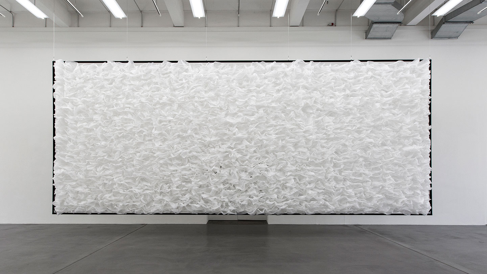
Example: moving objects | nº 1703 - 1750 by Pe Lang
https://www.pelang.ch/works.html
Precision, repetition, and restraint
Minimal mechanical arrangements produce complex visual behaviour through repetition, alignment, and precision.
- small motors as repeated units
- grids and fields
- synchronisation
- phase
- minimal material means
Aspects to pay attention to

Motion as mechanical poetry
Motion can feel fragile, absurd, futile, careful, or lyrical depending on mechanism, speed, and material.
Mechanical Thinking

A motor rarely creates the final motion directly
But before
Short sidequest
Output Devices:
Motors
What Are Actuators?
Devices that convert electrical energy into motion
Key parameters for motors:
- Type of motion: continuous, steps, limited angle
- Torque
- Speed
- (Power)
Common actuators:
DC Motors
Stepper Motors
Servo Motors
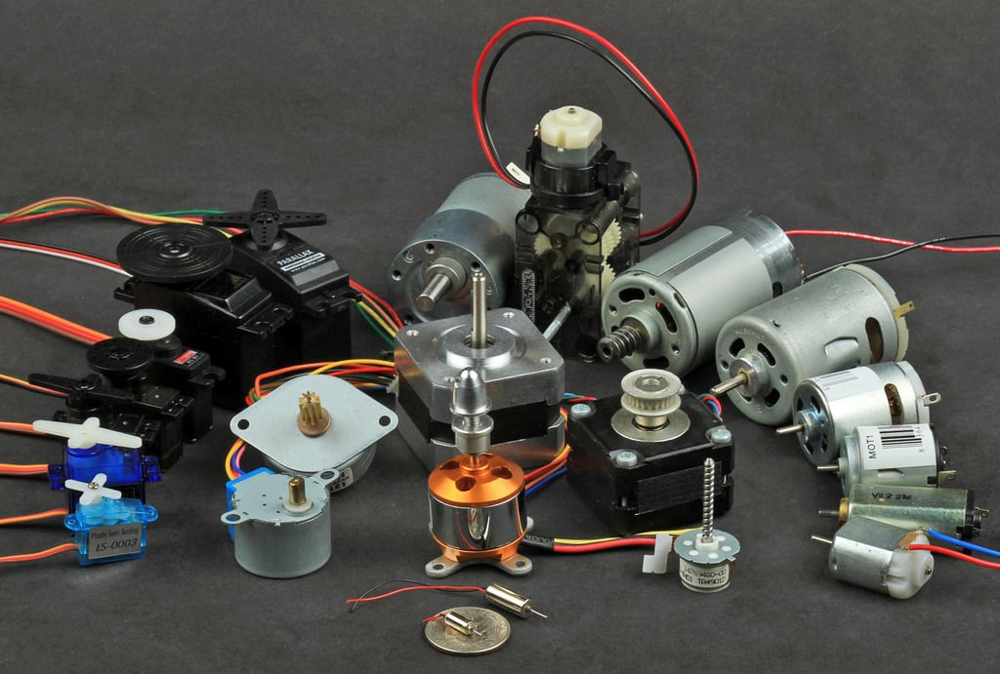
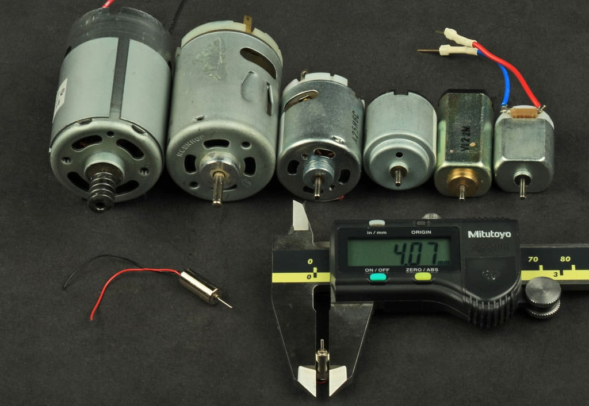
DC Motors
DC Motors – Fast and Simple
- Continuous rotation
- Speed controlled by PWM
- No position feedback (unless we add encoders)
DC Motors
Key Specs:
- Voltage rating (usually 3–12V)
- Current draw (check datasheet)
- Torque: low to moderate
- Control:
- Small motors directly from Arduino
- All others: H-bridge (e.g. L298N, DRV8871)
Pros: Simple and cheap
Cons: No positional control, torque drops at low speed
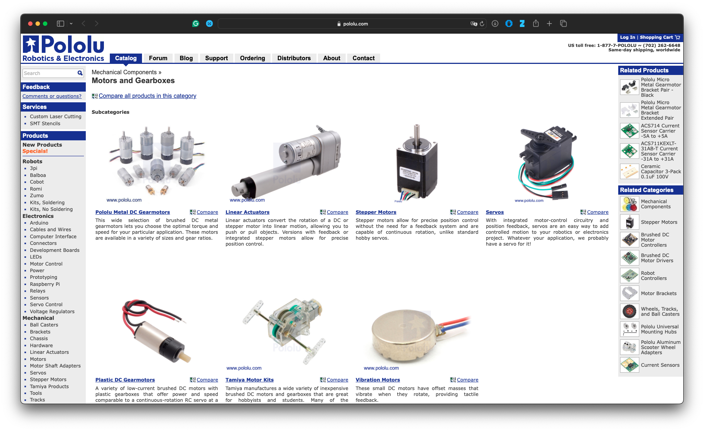
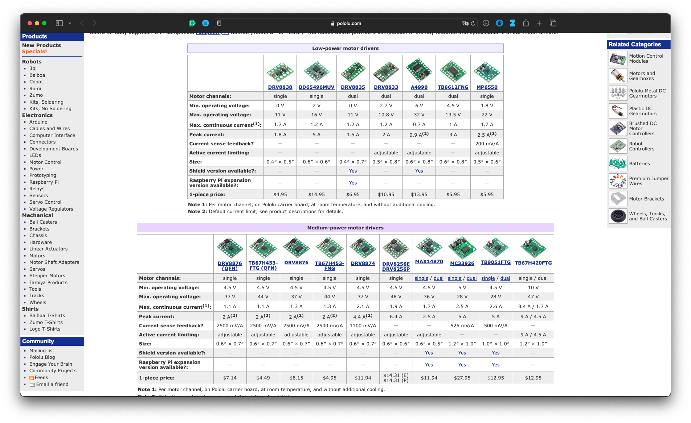
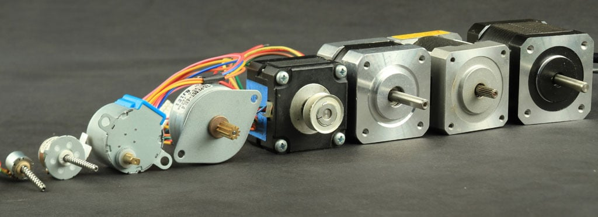
Stepper Motors
Stepper Motors
Precise Motion
- Moves in discrete steps (e.g. 200 steps/rev)
- Good for precise positioning
Stepper Motors
Key Specs:
- Voltage + current per coil
- Holding torque
- Step angle
- Bipolar vs. unipolar
Driver Examples:
- A4988, DRV8825, TMC2209
- Needs step and direction signals
Pros: Precise, good torque at low speed
Cons: Can skip steps under load, no feedback by default
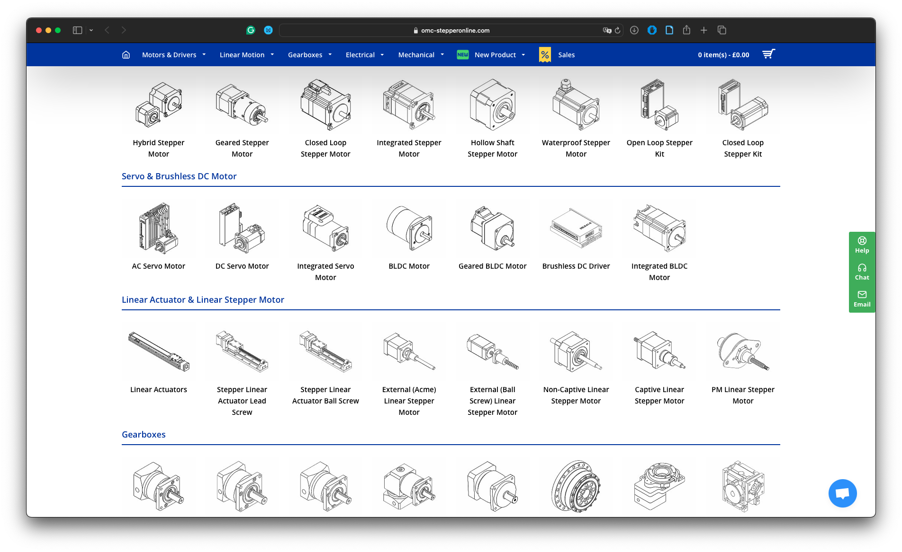
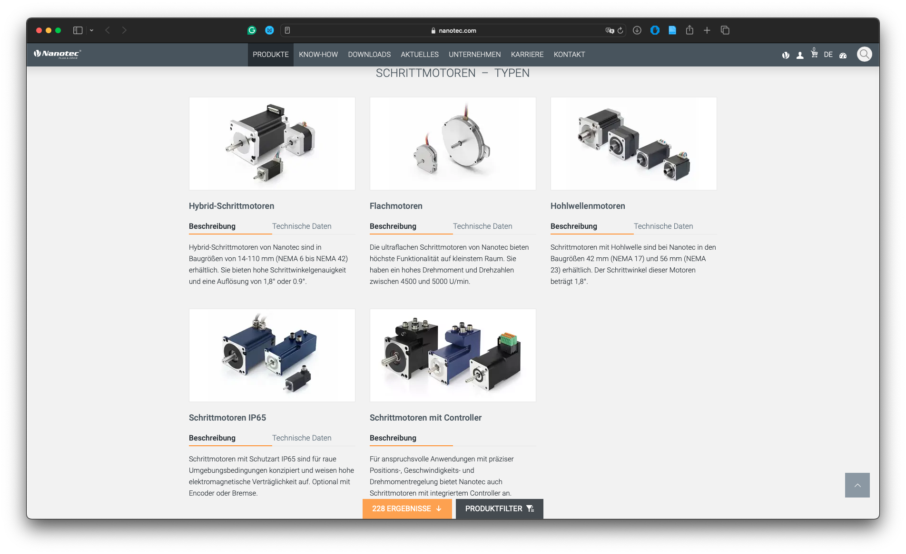
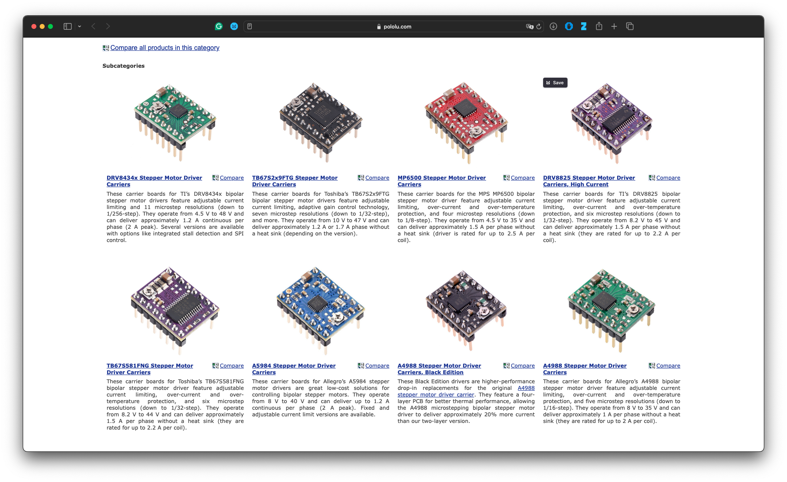
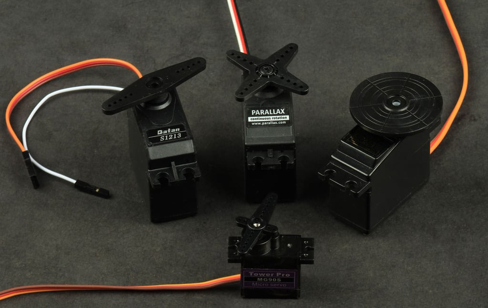
Servo Motors
Angle Control Made Easy
Servo Motors
- Typically 0–180° movement
- Controlled by PWM (1–2 ms pulse)
Types:
- Micro servos (SG90)
- Standard servos (MG996R)
- Continuous rotation servos
Specs to Check:
- Operating voltage (5–6V)
- Stall torque
- Speed (e.g. 0.12s/60°)
Pros: Easy to use, position control
Cons: Limited rotation range, not very strong
How to Choose the Right Motor
| Task | Motor Type |
|---|---|
| Rotate wheels | DC or Continuous Servo |
| Rotate arm precisely | Servo or Stepper |
| Position system in discrete steps | Stepper |
| Simple movement, low cost | DC |
Questions to ask yourself when choosing a motor
- Required torque
- Speed vs. precision
- Power source (battery vs wall)
- Controller hardware
Power & Driving Considerations
Driving Motors Safely
- Never power motors directly from Arduino!
- Use external power + common ground
- Use:
- H-bridges (DC)
- Stepper drivers (stepper)
- PWM pins (servo)
Check:
- Stall current or torque
- Required power:
P = V × I - Use capacitors to avoid voltage dips
Sidequest over
The motor provides energy and timing.
The mechanism gives that motion character.
Four Basic Mechanical Translations
Rotation → rotation
Gears, pulleys, belts, turntables
Rotation → linear motion
Cams, crank-sliders, rack and pinion, lead screws
Rotation → oscillation
Cranks, eccentric wheels, linkages
Many small motions → collective behaviour
Arrays of motors, flaps, strings, mirrors, reeds
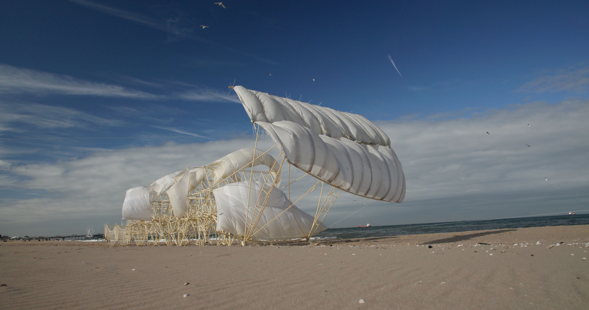
Example: Strandbeests by Theo Jansen
https://www.strandbeest.com/
Linkages and mechanical translation
Walking behaviour emerges from linked geometries and repeated mechanical relationships.
- rotation translated into walking
- repeated leg structures
- constraint as source of behaviour
- mechanical anatomy

One driver, many motions
A single or limited drive system can generate complex spatial motion through strings, phase offsets, and repeated relationships.
- wave motion
- collective behaviour
- phase shifts
- mechanical drawing in space

Physical pixels and responsive surfaces
A sensor input is translated into many small physical movements, producing a responsive image.
- camera input
- physical resolution
- material pixels
- actuation as image-making

Repetition, low-tech motors, acoustic consequences
Small repeated mechanical actions become spatial, visual, and sonic fields.
- repetition
- accumulation
- cardboard, wire, motors
- sound as consequence of movement
Stepper Motors
Countable motion
| Motor type | Useful for |
|---|---|
| Servo | simple angular gestures |
| DC motor | continuous spinning |
| Stepper | countable, repeatable, controlled rotation |
For steppers take into account:
- step count
- direction
- speed
- torque
- driver boards
- external power
Important warning:
Stepper motors should not be powered directly from the microcontroller.
Stepper Motor as Rhythm Tool
A stepper is useful when motion needs to be:
- repeatable
- countable/quantifiable
- slow and controlled
- rhythmically structured
- mechanically coupled to another object
Stepper and Servo comparison:
Servo = go to this angle.
Stepper = move this many steps through this rhythm.
Character Machine Task
Build a kinetic study
Create a small stepper-driven cam mechanism that expresses one chosen movement character.
You must combine:
- a motion profile in code
- a motion profile in matter
- a visible output
Output could be:
- cardboard arm
- paper flag
- hanging string
- small object
- drawing tool
- shadow-casting element
sound-making material
Emphasise “study,” not finished artwork.
Studio Workflow
Adjective → Motion Score → Mechanism → Test
- Choose a movement character
- Write a short motion score
- Choose or modify a cam shape
- Print the cam
- Code the stepper motion
- Assemble follower and output
- Test and adjust
Reading Motion
What is the motion saying?
- What character do we read?
- Where does that reading come from?
- What one adjustment would strengthen it?
Critique Language
Instead of:
“It works.”
Ask:
“What is the movement communicating?”
“Which decision produces that reading?”
“What would change if the cam were softer, sharper, slower, or less regular?”
Exercise 1: Heartbeat
Prove that the motor works
Basic test:
- move half a turn forward
- pause
- move half a turn backwards
- pause
Goal:
- confirm wiring
- confirm direction
- understand step count
- establish a simple time structure
Exercise 2: Motion Phrase
Write movement as a phrase
Example:
creep → pause → retreat → rush → rest
The phrase should define:
- speed
- acceleration
- direction
- range
- pause
- repetition
Exercise 3: Adjective Profile
Choose one adjective and define its motion parameters.
| Parameter | Choice |
|---|---|
| Speed | |
| Acceleration | |
| Range | |
| Rhythm | |
| Direction | |
| Rest | |
| Irregularity |
Possible adjectives:
- hesitant
- breathing
- limping
- impatient
- exhausted
- fragile
- ritualistic
- unstable
- watchful
- collapsing
- recovering
Closing Thought
Motion is a constructed relationship
A kinetic work is shaped by:
- timing
- mechanism
- material
- force
- constraint
- repetition
- context
The motor is only one part of the composition.
Follow-Up Assignment
Kinetic Study Documentation
Document your mechanism with:
- one short video
- one photo of the mechanism
- one sentence describing the intended motion character
- one sentence describing the mechanical decision
- one sentence describing what you would change next